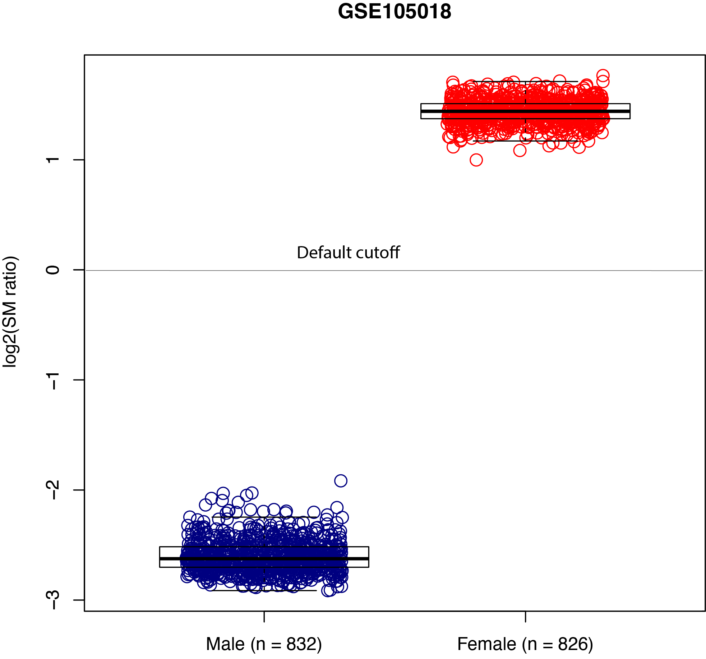

33. predict_sex
33.1. Overview
predict_sex predicts biological sex from X-chromosome DNA methylation
using the semi-methylation (SM) ratio.
The method uses the observation that X-chromosome inactivation produces a higher proportion of semi-methylated CpGs in samples with two X chromosomes.
For each sample, X-linked CpGs are divided into three Beta-value ranges:
Category |
Beta-value range |
Interpretation |
|---|---|---|
Low |
|
Low methylation. |
Mid |
|
Semi-methylation range. |
High |
|
High methylation. |
The score is calculated as:
where N_mid, N_low, and N_high are the numbers of X-linked CpGs
falling in the corresponding Beta-value ranges.
33.2. Prediction Rule
With cutoff \(c\):
log2_SM_ratio > c->Femalelog2_SM_ratio < c->Malelog2_SM_ratio == c->Unknown
The default cutoff is 0.0.
The prediction is also Unknown when the SM ratio is undefined, for
example when there are no CpGs in the mid range or when the combined low/high
count is zero.
33.3. Input Files
33.3.1. Beta-value matrix
The input must be a tab-separated Beta-value matrix with CpGs in rows and samples in columns.
Example:
CpG_ID Sample_01 Sample_02 Sample_03
cg_001 0.831035 0.878022 0.794427
cg_002 0.249544 0.209949 0.234294
cg_003 0.845065 0.843957 0.840184
Requirements:
CpG IDs must be unique.
Sample IDs must be unique.
At least one sample must be present.
Non-numeric values are converted to missing values and ignored independently for each sample.
33.3.2. X-chromosome CpG file
The X-probe file contains one X-chromosome CpG ID per line.
Example:
cg00000029
cg00000108
cg00000165
Blank lines and lines beginning with # are ignored. Duplicate probe IDs
are removed automatically.
At least one supplied X-linked CpG must also be present in the Beta-value matrix.
33.4. Usage
Basic usage:
predict_sex \
-i test_10.tsv.gz \
-x chrX_CpGs.txt.gz \
-o output
Use a custom cutoff:
predict_sex \
-i test_10.tsv.gz \
-x chrX_CpGs.txt.gz \
--cut 0.25 \
-o output
Available options are:
-i,--input_file– tab-separated Beta-value matrix-x,--xprobe– X-chromosome CpG-ID file-c,--cut– log2 SM-ratio cutoff (default: 0.0)-o,--output– output prefix--version– show the CpGtools version
Display all options with:
predict_sex -h
33.5. Output
For output prefix output, the command writes:
output.predicted_sex.tsv
The output contains one row per sample:
Column |
Description |
|---|---|
|
Sample identifier from the input matrix. |
|
Log2 semi-methylation ratio. |
|
|
|
Number of finite X-linked Beta-values available for that sample. |
|
Number of X-linked CpGs with Beta-values in [0.0, 0.2]. |
|
Number of X-linked CpGs with Beta-values in [0.3, 0.7]. |
|
Number of X-linked CpGs with Beta-values in [0.8, 1.0]. |
Undefined numeric ratios are written as NaN.
33.6. Example Data
33.7. Evaluation
In the original CpGtools evaluation using Illumina HumanMethylation450 BeadChip data from GSE105018, the classifier was reported to correctly classify 832 male and 826 female samples.
{kind=link}
